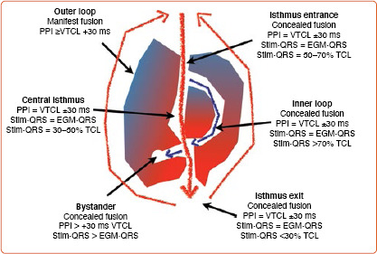
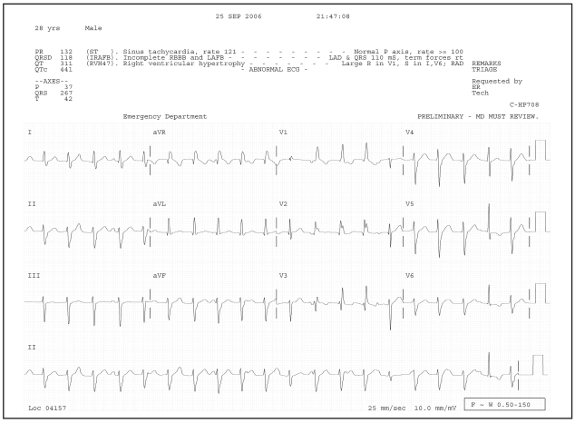
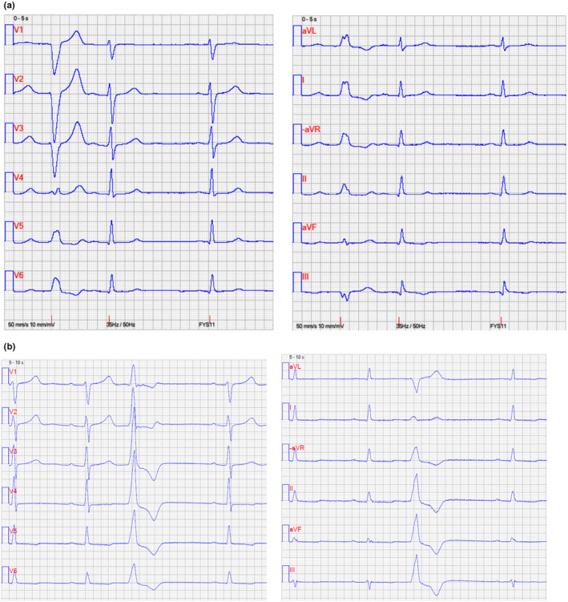
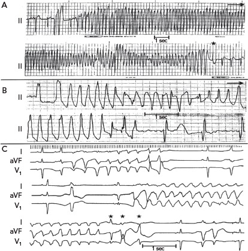

定義與定位
這個病是什麼？在分類樹的哪個位置？跟隔壁的病靠什麼分開？
| 項目 | 重點 |
|---|---|
| 本質 | 心室（希氏束分岔以下）自行發動的心搏過速：連續 ≥3 個心室搏動、速率 ＞100 bpm |
| 分類位置 | 心搏過速 → 寬 QRS（≥120 ms）一支；隔壁是 SVT with aberrancy 與預激性心房顫動 |
| 好發族群 | 有結構性心臟病者（心肌梗塞後最多）；少數為心臟結構完全正常的特發性 VT |
| 與 VF 的分界 | VT 有可辨識的 QRS 波與（多半）有脈搏；心室顫動（ventricular fibrillation, VF）完全無組織性波形、必無脈搏 |
三組必背的二分法
| 分軸 | 兩端 | 為什麼重要 |
|---|---|---|
| 型態 | 單型性（QRS 每跳都一樣）vs 多型性（QRS 形狀持續變化） | 單型性＝固定的折返環路（有疤痕）；多型性＝瀰漫性不穩定（缺血或 QT 延長） |
| 持續時間 | 持續性：＞30 秒，或雖未滿 30 秒但因血行動力崩潰而需立即終止｜非持續性（NSVT）：≥3 跳但 30 秒內自行終止且無血行動力影響 | 危險分層的基本單位；NSVT 多半不需急性處置，但是底層心臟病的警訊 |
| 機轉 | 疤痕折返型 vs 觸發活性／自動性 | 折返型可被電生理檢查誘發、可被電燒切斷；觸發型多與電解質、藥物、兒茶酚胺有關 |
病因與機制
為什麼會發生？病生理鏈條長什麼樣？——這一節寫好，下面的「臨床表現」就不用背。
病生理只有三條路：疤痕圍出的折返環路、觸發活性、自動性增強。第一條是慢性的、有固定基質、可以電燒；後兩條多半是急性、可逆、該去找誘因的。
| 機轉 | 典型底層病 | 典型型態 |
|---|---|---|
| 疤痕相關折返 | 心肌梗塞後、擴張型心肌病變、ARVC（arrhythmogenic right ventricular cardiomyopathy）、心臟類肉瘤、先天性心臟病術後（法洛氏四重症、大動脈轉位、Fontan） | 持續性單型性 VT |
| 觸發活性 | 早期後去極化 → 長 QT、Torsades；延遲後去極化 → 毛地黃中毒、CPVT、流出道 VT | 多型性／雙向性／流出道型 |
| 自動性增強 | 急性缺血、兒茶酚胺、低血鉀、低血鎂 | 多型性 VT、VF、AIVR |

Scar-related VT 的 channel／isthmus 模型：疤痕與 functional block 圍出狹窄傳導通道，入口、central isthmus、出口與旁觀路徑可用 pacing 與 electrogram 特徵定位。電燒的核心不是追著最早點跑，而是切斷維持折返所必需的 critical isthmus。Source: de Chillou et al., Arrhythm Electrophysiol Rev 2021, Figure 1（CC BY-NC 4.0）。臨床表現
典型病人長什麼樣？哪些症狀是幾乎一定有、哪些是提示性的？
- 典型：突發心悸、頭暈、前暈厥；速率快或心功能差時 → 低血壓、Shock、意識喪失
- 提示性：已知有心肌梗塞病史或心衰竭（這是最有力的臨床線索，比任何心電圖判準都好用）；先天性心臟病手術史；植入 ICD 者主訴「被電到」
- 少見但重要：猝死為首發表現（見 Sudden cardiac death↗）；運動或情緒激動時發作 → 想流出道 VT、CPVT、長 QT 症候群；睡夢中發作 → 想 Brugada syndrome
診斷
診斷標準是什麼？要開哪些檢查？哪個是 gold standard？
| 診斷條件 | 內容 |
|---|---|
| 心律紀錄 | 必須「抓到」心律不整本身：12 導程心電圖（最佳）、Holter／事件記錄器、植入裝置的紀錄、或電生理檢查誘發 |
| 型態判定 | QRS ≥120 ms ＋ 速率 ＞100 bpm ＝ 寬 QRS 心搏過速；再依 QRS 是否逐跳相同分單型／多型 |
| 底層病評估 | Echocardiography 看 LVEF 與結構；找缺血（見 EKG ischemia、Troponin、Myocardial perfusion imaging、冠狀動脈攝影）；心臟 MRI 找疤痕與浸潤性病變 |
| 一定要驗 | 鉀、鎂、鈣、腎功能、甲狀腺功能、用藥清單（含延長 QT 的藥） |
VT vs SVT with aberrancy
支持 VT 的心電圖徵象（由強到弱）
| 徵象 | 內容 | 為什麼 |
|---|---|---|
| AV dissociation | P 波與 QRS 各走各的，P 波頻率 ＜ QRS 頻率 | 心室自己在跑，心房仍受竇房結指揮——幾乎確診 VT（特異度高、敏感度低，因為常看不到 P 波） |
| Fusion beat | 一個「混血」QRS：上面下來的竇性衝動與心室的衝動同時去極化心室 | 證明有兩個獨立節律點，等於 AV dissociation 的直接證據 |
| Capture beat | 一個突然變窄的正常 QRS：竇性衝動剛好搶在心室之前完全奪取心室 | 同上 |
| QRS 極寬 | RBBB 型 ＞140 ms；LBBB 型 ＞160 ms | 傳導不走 His-Purkinje，只能心肌對心肌慢慢傳 |
| 極端電軸 | 電軸落在 −90° 至 ±180°（「西北軸／無人區」） | 正常傳導系統做不出這種向量 |
| 胸前導程 concordance | V1–V6 全部正向或全部負向 | 去極化向量單向掃過整個胸前，不像正常傳導 |
| 無 RS 波型 | V1–V6 完全找不到 RS 型 QRS | Brugada 演算法第一步 |
| RS interval ＞100 ms | 任一胸前導程中，R 起點到 S 谷底 ＞100 ms | Brugada 演算法第二步 |

確診 VT 的節律條：P 波在 QRS 間獨立 march through（beats 2–10），代表 AV dissociation；第 11、15、20 個 QRS 是 fusion beats，倒數第二個（第 19）較窄的是 capture beat。這三種其實都是「心房與心室各自跑」的不同外觀。Source: Garner & Miller, West J Emerg Med 2008, Figure 2（CC BY 4.0）。從 QRS 型態反推起源
| 心電圖線索 | 起源 |
|---|---|
| LBBB 型（V1 以 S 波為主） | 右心室或心室中膈 |
| RBBB 型（V1 以 R 波為主） | 左心室 |
| 下壁電軸（II、III、aVF 正向） | 心臟上方 → 流出道（RVOT／LVOT） |
| 上壁電軸（II、III、aVF 負向） | 心臟下方 → 心尖或下壁 |
| LBBB 型 ＋ 下壁電軸 | 右心室流出道 |
| RBBB 型 ＋ 左軸偏移 | 左後分支型（fascicular）VT |
心肌梗塞後疤痕型 VT 起源在梗塞區邊緣帶（前壁梗塞多在心尖／中膈，下壁梗塞多在基底下壁，見 ACS、CAD）；法洛氏四重症修補後是 LBBB 型、起源在右心室；ARVC 也是 LBBB 型，與 RVOT VT 的差別在有結構性右心室病變、心電圖有 epsilon wave 與 V1–V3 T 波倒置。心房來源的心律不整只有在合併束枝阻滯或旁路時才寬，不可能是單型性 VT 的起源——討論起源時範圍只在左右心室與中膈。

兩個實例把三條定位規則壓在一起：上排 (a) 的 V1 呈 LBBB pattern，支持右心室起源；下排 (b) 的 V1 呈 RBBB pattern，支持左心室起源，而 II／III／aVF 主要向下、正向的 inferior axis 指向上方的 outflow tract 起源。這是方向線索，不是 100% 的解剖定論。Source: Siontis et al., Ann Noninvasive Electrocardiol 2023, Figure 1（CC BY-NC-ND 4.0）。Torsades de pointes
| 項目 | 內容 |
|---|---|
| 定義 | 多型性 VT ＋ 基礎心律的 QT 延長；QRS 主軸繞基線扭轉，常由 short–long–short 序列（早搏 → 代償間歇 → 落在 T 波上的早搏）誘發 |
| 危險門檻 | QTc ＞500 ms 風險明顯上升；＞600 ms 高危 |
| 藥物原因 | Class IA（quinidine、procainamide、disopyramide）、Class III（sotalol、dofetilide、ibutilide）、macrolide（erythromycin、clarithromycin）、fluoroquinolone（moxifloxacin）、azole 抗黴菌藥、抗精神病藥（haloperidol、thioridazine）、methadone、ondansetron、三環抗憂鬱劑、arsenic trioxide |
| 代謝原因 | 低血鉀（見 Hypokalemia）、低血鎂、低血鈣、飢餓／厭食症、甲狀腺功能低下、心搏過緩與長間歇（含高度房室阻滯）、Dialysis 後電解質急速變動 |
| 先天原因 | Long QT syndrome |
處置順序：① 停掉所有可能延長 QT 的藥 → ② 靜脈硫酸鎂 1–2 g 於 15 分鐘內給完，必要時重複——即使血鎂正常也要給 → ③ 把血鉀補到高標（約 4.5–5.0 mmol/L）→ ④ 仍反覆發作就提高心率縮短 QT：暫時性經靜脈超速起搏（overdrive pacing） 或 isoproterenol → ⑤ 惡化成持續性或無脈搏 → 立即電擊

後天長 QT 與 TdP 的連續紀錄：發作常由落在延長 QT／T 波上的 PVC 與 short–long–short sequence 啟動；之後 QRS 振幅與電軸繞基線週期性改變，形成 twisting of the points。A 顯示快速時以振幅起伏為主，B 較清楚呈現正負極性扭轉，C 顯示同一病人不同發作型態。Source: El-Sherif et al., Arrhythm Electrophysiol Rev 2018, Figure 1（CC BY-NC 4.0）。鑑別診斷
要跟誰分清楚？靠什麼分？
| 要排除的 | 支持它的線索 | 怎麼排除 |
|---|---|---|
| SVT with aberrancy | 無結構性心臟病；發作前後心電圖顯示同樣型態的束枝阻滯；有 P 波在每個 QRS 前 | 找 AV dissociation／fusion／capture（有 → VT）；Brugada criteria；懷疑時仍當 VT 處理 |
| 預激性心房顫動（WPW ＋ Afib） | 不規則且極快（可 ＞250 bpm）、QRS 寬度逐跳變化 | 節律不規則是關鍵；禁用 AV 節阻斷藥（adenosine、verapamil、diltiazem、digoxin、β-blocker），用 procainamide 或電擊。見 Atrial fibrillation |
| 心室顫動 | 完全無組織性 QRS、必定無脈搏 | 立即 CPR ＋ 非同步去顫 |
| 藥物／電解質造成的寬 QRS ＋ 心搏過速 | 高血鉀（QRS 漸寬、T 波高尖）、三環抗憂鬱劑中毒（QRS ＞100 ms、aVR 終末 R 波） | 抽電解質、問用藥；高血鉀給鈣、TCA 中毒給碳酸氫鈉 |
| 起搏器介導的心搏過速 | 每個寬 QRS 前有 pacing spike | 看 spike；磁鐵測試 |
| 加速性心室自主節律（AIVR） | 速率僅 40–120 bpm、常見於再灌流後、血行動力穩定 | 靠速率；不需抗心律不整藥 |
治療
第一線是什麼？什麼情況升級？
急性處置：先問「有沒有脈搏」，再問「穩不穩」
| 情境 | 處置 |
|---|---|
| 無脈搏 VT／VF | 立即非同步去顫（雙相 120–200 J，依機型）＋ 高品質 CPR；epinephrine 1 mg 每 3–5 分鐘；第三次電擊後給 amiodarone 300 mg 靜脈推注（可再追加 150 mg），或 lidocaine 1–1.5 mg/kg |
| 有脈搏但不穩定（低血壓、意識改變、休克、缺血性胸痛、急性心衰竭） | 立即同步整流（synchronized cardioversion）；清醒者先鎮靜。單型性 VT 在傳統教材是雙相 100 J 起始；2020 ACLS 已刪掉具體焦耳數，改成依機器建議——考試照舊版寫 100 J，臨床照機器 |
| 有脈搏、穩定、單型性 VT | 靜脈抗心律不整藥：procainamide 或 amiodarone（150 mg 於 10 分鐘給完，可重複，再 1 mg/min 維持 6 小時）；藥物無效 → 鎮靜後同步整流 |
| 多型性 VT | 通常無法可靠同步 → 當作 VF 用高能量非同步電擊。同時分流：QT 長 → 給鎂（Torsades 路徑）；QT 正常 → 找急性缺血並再灌流 |
| 全程並行 | 補鉀與鎂、矯正缺氧與酸中毒、停掉致心律不整藥物、找並治療急性缺血 |
長期預防：順序不能顛倒
| 層次 | 內容 |
|---|---|
| ① 先矯正可逆因素 | 心肌缺血（血運重建）、低血鉀／低血鎂、致 QT 延長藥物、甲狀腺功能異常、心衰竭失代償 |
| ② 藥物 | Beta blocker↗ 是唯一有存活好處的抗心律不整治療；心衰竭者完整用上 ACEI／ARNI、MRA、SGLT-2 抑制劑（本身就降低猝死） |
| ③ 抗心律不整藥（症狀性） | Amiodarone、sotalol 可減少 VT 發作與 ICD 放電，但不改善存活——它們的定位是「減少症狀與電擊」，不是「救命」 |
| ④ 裝置 | 見下方「什麼時候該想到裝置」 |
| ⑤ 導管電燒 | 特發性 VT（RVOT／fascicular）：第一線，可根治｜疤痕型 VT：用於反覆發作、藥物無效、反覆 ICD 放電、電風暴 |
併發症與預後
住院時要盯什麼？出院後會怎麼樣？
- 要盯的併發症：退化成心室顫動 → Sudden cardiac death↗；血行動力崩潰 → Shock；電風暴（24 小時內 ≥3 次獨立的 VT／VF 發作或 ICD 適當放電）；心搏過速性心肌病變（長期未控制的頻繁 VT／NSVT）
- 預後因子：左心室射出分率是最強的單一預後因子；有無結構性心臟病（特發性 VT 預後接近常人）；持續性 vs 非持續性；能否找到並矯正可逆原因
禁忌與陷阱
相關連結
- 裝置與終點：ICD（適應症門檻、等待期、試驗證據、併發症全部在那裡）、Sudden cardiac death↗
- 可逆原因與基質：ACS、CAD、EKG ischemia、Troponin、Hypokalemia
- 藥物：Beta blocker↗（唯一有存活好處的抗心律不整治療）、Amiodarone（減少發作、不改善存活）
- 鑑別與底層病：Brugada syndrome、Long QT syndrome、Tetralogy of Fallot、HCM、Atrial fibrillation、Heart failure
- 主訴入口與評估：Chest pain↗、Dyspnea、Shock、Echocardiography